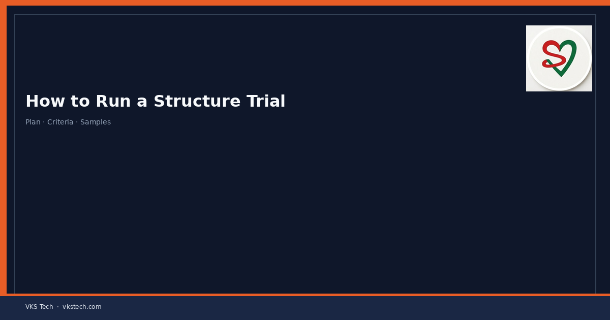
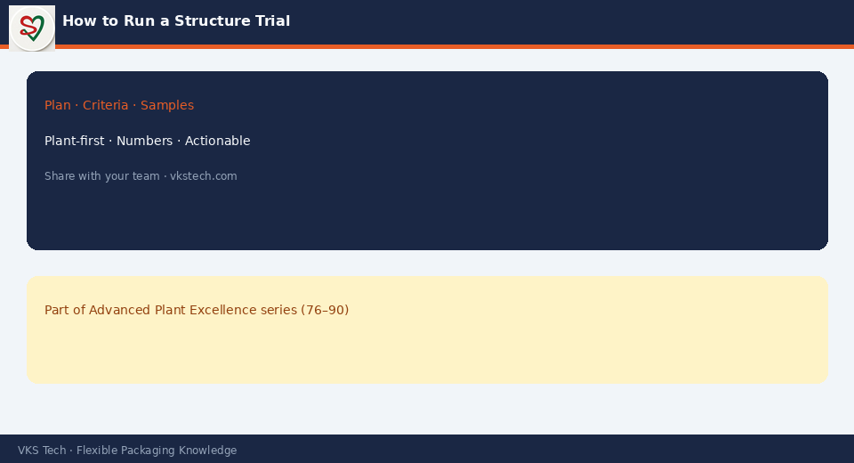

🧪 A Structure Trial Is Not “Run a Few Rolls and See”. It Is a Controlled Experiment with Clear Pass/Fail Criteria and Documented Learnings.
📖 11-min read · New Structures & Trials · R&D + Quality + PPC + Production
New laminates, mono-material packs, new inks or new suppliers arrive as “trials”. Too often the trial is informal: a few rolls are run, someone says “it looked okay”, and the structure is either accepted or rejected without data. A proper trial method turns that into a controlled, documented process that protects quality, capacity and customer relationships.
- Define the purpose and success criteria before the first metre is run
- Control variables: same machine, same operators, same conditions where possible
- Measure the critical properties (bond, seal, COF, appearance, processability)
- Document results, issues and recommendations in a standard trial report
- Only scale after the trial report is reviewed and signed off

1. Before the Trial Starts
- Write the purpose in one sentence (e.g. “Validate new 3-layer mono PE for existing centre-seal pouch at current speeds”).
- List the must-pass criteria (bond strength min, seal strength, COF range, visual, processability on current machines).
- Agree quantity, machine, shift and who will own the trial report.
- Prepare sampling plan and lab tests in advance.
2. During the Trial
- Record machine settings, speeds, viscosities, temperatures, tensions.
- Note every issue in real time (wrinkles, register, blocking, seal problems).
- Take samples at defined points (start, middle, end, after changeovers if any).
- Keep the rest of the plant informed so the trial does not disrupt other jobs more than planned.
3. After the Trial — The Report
A useful trial report contains:
- Purpose and success criteria
- What was actually run (materials, machines, settings)
- Measured results vs criteria
- Process observations and any defects
- Clear recommendation: accept / reject / re-trial with changes
- Owner and date
Make the trial method part of the standard operating system for any new structure, ink, adhesive or major process change.
🧪 स्ट्रक्चर ट्रायल “कुछ रोल चलाकर देखो” नहीं है। यह स्पष्ट पास/फेल मानदंड और दस्तावेजीकृत सीख के साथ नियंत्रित प्रयोग है।
📖 11-मिनट पढ़ें · नए स्ट्रक्चर & ट्रायल · R&D + क्वालिटी + PPC
नए लेमिनेट, मोनो-मटेरियल पैक, नई इंक या नए सप्लायर “ट्रायल” के रूप में आते हैं। अक्सर ट्रायल अनौपचारिक होता है: कुछ रोल चलते हैं, कोई कहता है “ठीक लग रहा था”, और स्ट्रक्चर बिना डेटा के स्वीकार या रिजेक्ट हो जाता है। सही ट्रायल मेथड इसे नियंत्रित, दस्तावेजीकृत प्रक्रिया बनाता है।
- पहले उद्देश्य और सफलता मानदंड लिखें
- चर नियंत्रित करें (मशीन, ऑपरेटर, शर्तें)
- क्रिटिकल गुण मापें (बॉन्ड, सील, COF, दिखावट)
- परिणाम और सिफारिश स्टैंडर्ड ट्रायल रिपोर्ट में दस्तावेज करें